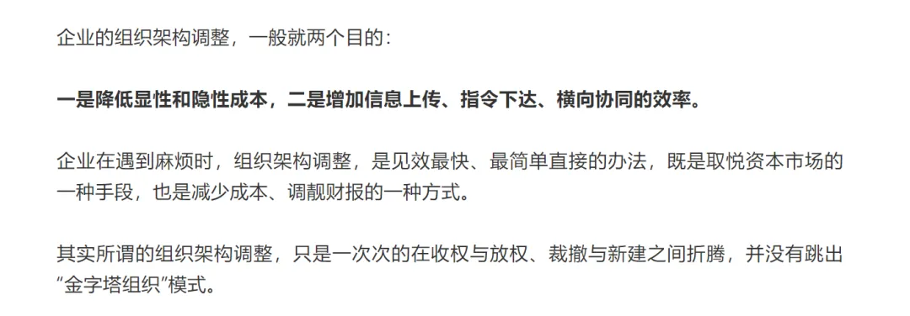

薪净自然凉
经常有这类现象：读者提问一个问题，等我回复完，发现他已经匆匆删了。为了避免浪费时间和精力，提高效率，建议留言前考虑好是否留言...
人生就是这样，你常常期盼一个答案，但又害怕，真的给你一个答案。这种心情，我懂：
** 有时候不想知道，不是不在乎，而是太在乎 ** 。
NO. 1｜壹
潘石屹没能成功脱手的 SOHO中国 ，旗下有家持股95%的子公司：北京建华置地有限公司。
据北京市税务局公告，北京建华置地在SOHO尚都项目（二、三期）土地增值税清算和企业所得税汇算清缴中，违规多扣成本，进行虚假申报，少缴土地增值税和企业所得税1.98亿元。
税务部门依法 追缴税款1.98亿元、加收滞纳金并处2.5倍罚款，共计7.09亿元 。
** 碧桂园已开始优化（裁员） ** ，部分区域是40%，区域平台调整不了的，就下放到项目，有的区域人力条线全裁，一个地级市只留一个综合负责人。
级别高的，一样裁。能不能留下来，最终还是看关系和存在价值。
老板挣钱是因为老板承担风险，企业挣了，大头老板拿。如今，有的老板赚够了就想清仓跑路；有的老板一边财源滚滚，另一边大手一挥裁员滚滚，福利待遇等先从基层员工削起......
昨天，有个“以舅换薪”曾经的世界五百强的员工很不服气，气呼呼地跑来理论， 说我损害他们公司的形象。
我问他：我怎么损害你们公司形象了。从他千余字的长篇大论中，看清楚了他的意思： 虽然我说的都是真的，但是 我把他们公司所作所为都记录下来了，影响不好 。
没再理他，已经不知道该说什么了。我，心静自然凉；他和公司一样： 薪净自然凉 。
那一刻，很庆幸自己不是女性，要不然万一时常遇到这种小白，忍一时卵巢囊肿，退一步乳腺增生，左右都是自己难受。
NO. 2｜贰
昨天， 万科内部发文宣布人事调整 ：
张海不再兼任上海区域区首，继续担任万科开发经营本部首席合伙人兼CEO。万科上海区域原第一副总经理、杭州公司总经理吴镝升任上海区域区首。
** 开发经营本部 ** ，其角色和定位，相当于 万科集团下设的地产总部 ，不仅承担产品设计、招采、成本、工程、营销等专业能力建设，还统筹房地产开发业务管理。
2021年之前，万科不断将总部权力下放给地方，通过精简集团组织架构，实现更扁平化管理， 行业好时，区域分兵作战灵活有优势 ，万科也因此受益，迅速做大规模。
如今， 市场趋冷，风险防范已经成为企业最重要的事情 。 万科开始加强集团管控，方便集中力量办大事。
上海区域业绩是这几年万科业绩第一的区域，区首张海本人，又是万科最资深区首，由他负责万科经营开发本部是最合适人选。
资本市场也需要新故事，还是之前说过的：

贝壳找房被著名做空机构浑水盯上了。
浑水发布了针对贝壳的沽空报告。 浑水认为 贝壳虚增门店数和中介数 ，存在幽灵商店和克隆商店的情况，同时， 浑水认为贝壳虚假收购 ，夸大了其2019年对中环互联的收购价格，通过这种方式消耗掉虚假的现金。
同时， 浑水认为贝壳 存在系统性欺诈 ，虚增交易额和收入 ，称贝壳在第二、三季度中新房总交易额（GTV）被夸大126%，佣金收入数据被夸大了77%-96%，经纪人数量被夸大。
贝壳称，浑水机构不专业，并一一回应质疑点。
我认真看了看浑水的报告，确实有不够专业的地方，比如门店数。中介门店中，经常存在“一门双店”的现象，即AB两组甚至三组，共用一家门店，每组都是一个单独的经营单位。
利益相关，我已出售所持有的贝壳找房股票，小亏，没必要也不屑于替贝壳洗地板。
NO. 3｜叁
金科地产集团，将 金科服务（金科的物业公司）约22%的股权，以37.34亿港元的价格，转让给博裕投资 。
金科作为“假绿档”的典型、“担保小王子”（上一家担保小王子是泰禾）， 出售物业股份回款，有助于缓解和改善公司的资金结构和状况 。
表外的负债也是负债，并不会凭空消失，终究是要还的。我们要做的是正视问题，并不是遮遮掩掩，这个行业不缺欺瞒，缺的是坦荡。
印象中，几个擅长在资本市场高调舞袖的房企老板：宝能姚振华、恒大许家印、泰禾黄其森、金科黄红云。
昨天遇到个杠精，动不动就想激我： 你又不是记者， 行业怎么样 ，轮得到你来说嘛！
** 打雷的时候 ** ，阁下何不乘风起，扶摇直上九万里，亲自去问问： 雷公有打雷证吗？
还有个所谓的大V说： 行业 很好，都是 被你唱衰了 。这种阅读理解0分，怎么成大V的我也不知道，就这水平...我从未唱衰行业，一直对外输出的观念都是：行业出清、优胜劣汰后，更有利于行业健康发展。
想起那句著名的“谈到大英帝国的辉煌，连伦敦街头食不果腹的乞丐都会满脸骄傲”；但我想说的是： ** 一头驴子，不会因为拉的磨上面镶满了钻石而感到高兴 ** 。
谁都别太把自己当回事，我也一样。
最近，遭遇困境的房企略多，外界纷纷扰扰。其实， 此时不急于给房企下定论，等一月份再看：一看销售回款；二看债务展期情况；三看年报审计后，公司是否能开始陆续兑付商票。
写文章，本意是想在自己能力范围内：一是替有需要的人答疑解惑；二是给中小企业等提供正确的房企信息，避免踩坑；三是地产人就业求职时，尽量避坑。
始终认为： ** 阅历如果不能带来对纯真的珍视、对善良的尊重、对艰辛的体谅，那么这种阅历一文不值。 **
** **
按日期浏览全部来源（同日按条目标识排序）